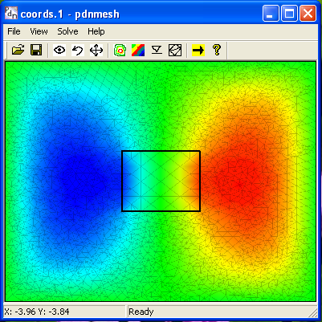
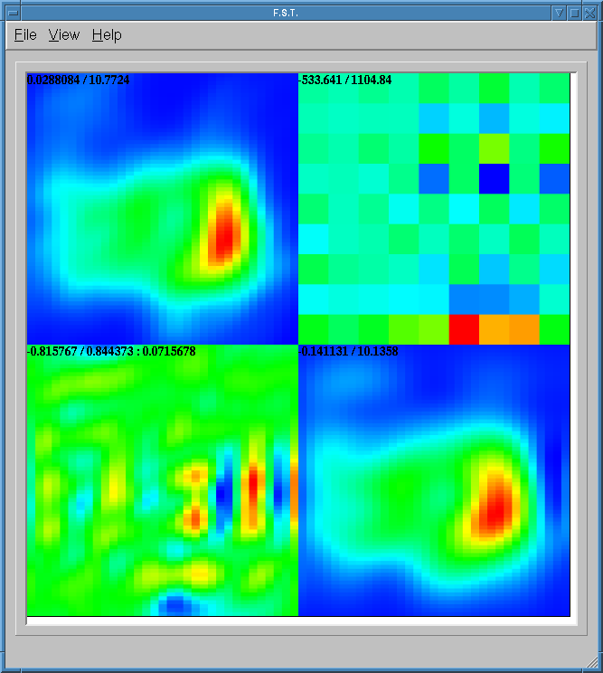

Pdnmesh is a Finite Element program that can solve 2D field
problems.

Please visit this
site for more information.
Fast, Robust, GPU accelerated radio interferometric calibration. Please visit this site for more information.
GPU accelerated Gigapixel imager, suitable for ultra-deep ultra-widefield radio interferometric imaging. Please visit this site for more information.
FST (Fast Shapelet Transformer) is a program to decompose FITS files to shapelets.

Get the source: Here!. Read the INSTALL file for compile instructions.
FITScorr is a program to do subspace decomposition of a set of FITS files.
Get the source: Here!. Read the INSTALL file for compile instructions. More details can be found in my URSI GA 2008 paper.
Last Edited: Fri Jun 20 23:26:04 CEST 2014